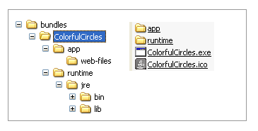
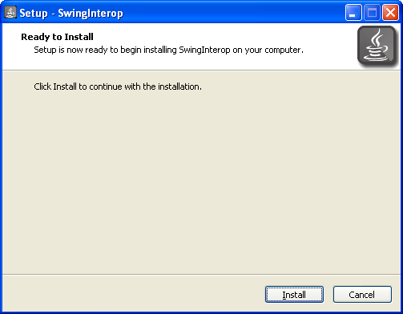
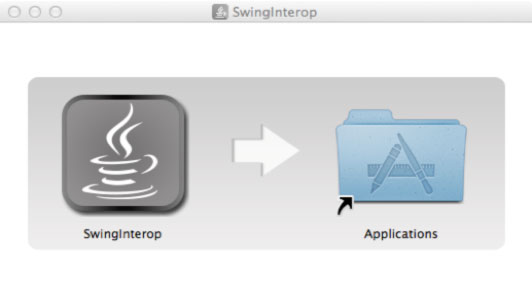
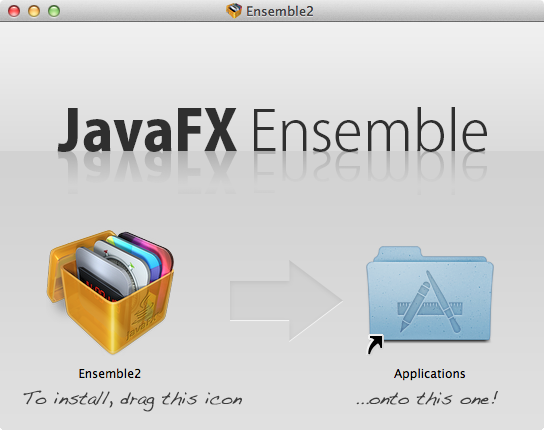

This topic describes how to generate the package for a self-contained application. A self-contained application contains your Java or JavaFX application and the JRE needed to run the application.
This topic includes the following sections:
The Java packaging tools provide built-in support for several formats of self-contained application packages. The basic package is a single folder on your hard drive that includes all application resources and the JRE. The package can be redistributed as is, or you can build an installable package (for example, EXE or DMG format.)
From the standpoint of process, producing a self-contained application package is similar to producing a basic application package as discussed in Chapter 5, "Packaging Basics," with the following differences:
Self-contained application packages must be explicitly requested by passing additional arguments to the <fx:deploy> Ant task or javapackager tool.
Operating system and tool requirements must be met to be able to build a package in a specific format.
Self-contained application packages can only be built using JDK 7 Update 6 or later.
While it is easy to create a basic self-contained application package, tailoring it to achieve the best user experience for a particular distribution method usually requires some effort and a deeper understanding of the topic.
Deciding whether the use of self-contained application packages is the best way to deploy your application depends on your requirements.
Self-contained application packages provide the following benefits:
Users install the application with an installer that is familiar to them and launch it in the usual way.
You control the version of the JRE used by the application.
Applications can be deployed on fresh systems with no requirement for the JRE to be installed.
Deployment occurs with no need for admin permissions when using ZIP or user-level installers.
File associations can be registered for the application.
Support for secondary launchers enables a suite of applications to be bundled in a single self-contained application package.
Self-contained application packages have the following drawbacks:
"Download and run" user experience
Unlike web deployment, the user experience is not about "launch the application from the web." It is more one of "download, install, and run" process, in which the user might need to go through additional steps to get the application launched. For example, the user might have to accept a browser or operating system security dialog, or find and launch the application installer from the download folder.
Larger download size
In general, the size of self-contained application packages is larger than the size of a standalone application, because a private copy of the JRE is included.
Package per target platform
Self-contained application packages are platform-specific and can only be produced for the same system on which you build. To deliver self-contained application packages on Windows, Linux, and OS X, you must build your project on all three platforms.
Application updates are the responsibility of developer
Web-deployed Java applications automatically download application updates from the web as soon as they are available. The Java Autoupdate mechanism takes care of updating the JRE to the latest secure version several times every year. Self-contained applications do not have built-in support for automatic updates.
Each self-contained application package includes the following items:
Application code, packaged into a set of JAR files, plus any other application resources (data files, native libraries)
Copy of the JRE, to be used by this application only
Native launcher for the application, multiple launchers for a single package are supported
Metadata, such as icons
Multiple package formats are possible. Built-in support is provided for several types of packages. You can also assemble your own packages by post-processing a self-contained application packaged as a folder, for example if you want to distribute your application as a ZIP file.
The basic form of a self-contained application package is a single folder on your hard drive, such as the example in Figure 7-1. When any of the packages are installed, the result is a folder with the same content.
Figure 7-1 Example of a Self-Contained Application Package
The internal structure of a self-contained application folder is platform-specific, and might change in the future. However, the following items apply to all platforms and are not likely to change:
The application package, as defined in Chapter 5, "Packaging Basics," is included as a folder, preserving the application directory structure.
A copy of the JRE is included as another folder, and the JRE directory structure is preserved.
Because directory structure is preserved, the application can load external resources using paths relative to the application JAR or java.home system property.
|
Note: Only a subset of the JRE is included by default. Some optional and rarely used files are excluded to reduce the package size, such as all executables. If you need something that is not included by default, then you need to copy it in as a post-processing step. For installable packages, you can do this from theconfig script that is executed after populating the self-contained application folder. See Section 7.3.3, "Customizing the Package Using Drop-In Resources." |
The easiest way to produce a self-contained application is to modify the deployment task. To request the creation of all types of self-contained application packages for the platform on which you are running, add nativeBundles="all" to the <fx:deploy> task, as shown in Example 7-1.
Example 7-1 Simple Deployment Task to Create All Self-contained Application Packages
<fx:deploy width="${javafx.run.width}" height="${javafx.run.height}"
nativeBundles="all"
outdir="${basedir}/${dist.dir}" outfile="${application.title}">
<fx:application name="${application.title}" mainClass="${javafx.main.class}"/>
<fx:resources>
<fx:fileset dir="${basedir}/${dist.dir}" includes="*.jar"/>
</fx:resources>
<fx:info title="${application.title}" vendor="${application.vendor}"/>
</fx:deploy>
You can also specify the exact package format that you want to produce. Use the value image to produce a basic package, exe to request an EXE installer, dmg to request a DMG installer, and so on. For the full list of attribute values, see the nativeBundles attribute in the <fx:deploy> entry in the Ant Task Reference.
You can also produce native packages using the Java Packager tool. Self-contained application packages are built by default when you use the -makeall command. You can request specific formats using the -native option with the -deploy command. See the javapackager command reference for Windows or for Solaris, Linux, or OS X.
Example 7-2 shows the use of the -native option with the -deploy command, used to generate all applicable self-contained application packages for the BrickBreaker application. The -deploy command requires a JAR file as input, so it assumes that dist/BrickBreaker.jar has already been built:
The packaging tools use several built-in resources to produce a package, such as the application icon or configuration files. One way to customize the resulting package is to substitute a built-in resource with your customized version.
The following actions are needed:
Learn what resources are used.
Drop custom resources into a location where the packaging tool looks for them.
The following sections explain how to use custom resources.
To get more insight into what resources are being used, enable verbose mode by adding the verbose="true" attribute to <fx:deploy>, or pass the -v option to the javapackager -deploy command.
Verbose mode includes the following actions:
The following items are printed:
List of configuration resources that are used for the package that you are generating
Role of each resource
Expected custom resource name
A copy of the configuration files and resources used to create the self contained package are saved to a temporary folder. You can use these files as a starting point for customization
Example 7-3 shows sample output, with the important parts in bold:
Example 7-3 Sample Output in Verbose Mode
Using base JDK at: /Library/Java/JavaVirtualMachines/jdk1.7.0_06.jdk
Using default package resource [Bundle config file] (add
package/macosx/Info.plist to the class path to customize)
Using default package resource [icon] (add package/macosx/DemoApp.icns
to the class path to customize)
Creating app bundle: /tmp/test/TestPackage/bundles/DemoApp.app
Config files are saved to /var/folders/rd/vg2ywnnx3qj081sc5pn9_
vqr0000gn/T/build7039970456896502625.fxbundler/macosx. Use them
to customize package.
Now you can grab a copy of the configuration files and tune them to your needs. For example, you can take the configuration file Info.plist and add localized package names.
|
Note: It is recommended that you disable verbose mode after you are done customizing, or add a custom cleanup action to remove sample configuration files. |
Packaging tools look for customized resources on the class path before reverting to built-in resources. The Java Packager has "." (the current working directory) added to the class path by default. Therefore, to replace the application icon, copy your custom icon to ./package/macosx/DemoApp.icns in the directory from which javapackager is run (typically, the root project directory).
The class path for Java Ant tasks is defined when task definitions are loaded. You must add an additional path to the lookup before the path ant-javafx.jar.
Example 7-4 shows how to add "." to the class path. For a more detailed code example, see Example 6-1.
Example 7-4 Enabling Resource Customization for JavaFX Ant Tasks
<taskdef resource="com/sun/javafx/tools/ant/antlib.xml"
uri="javafx:com.sun.javafx.tools.ant"
classpath=".:path/to/sdk/lib/ant-javafx.jar"/>
After you provide a customized resource, verbose build output reports that the resource is used. For example, if you added a custom icon to an application, then the verbose output reports the addition, shown in Example 7-5.
Example 7-5 Verbose Output After Adding a Customized Icon Resource
Using base JDK at: /Library/Java/JavaVirtualMachines/jdk1.7.0_06.jdk
Using default package resource [Bundle config file] (add
package/macosx/Info.plist to the class path to customize)
Using custom package resource [icon] (loaded from
package/macosx/DemoApp.icns on class path)
Creating app bundle: /tmp/test/TestPackage/bundles/DemoApp.app
Many of the existing Java Ant elements are used to customize self-contained application packages. Different sets of parameters are needed for different packages, and the same element might have different roles. Table 7-1 introduces many of the customization options.
Table 7-1 Customization Options with Ant Elements and Attributes
| Element | Attribute | Details |
|---|---|---|
|
|
|
Application identifier. The format is platform and package specific. If not specified, then a value is generated. |
|
|
Application version. The default is |
|
|
|
Short name of the application. Most bundlers use this name to create the name of the output package. If not specified, then the name of the main class is used. |
|
|
|
|
Desktop shortcut request. If set to |
|
|
Menu entry request. If set to true then an entry in the applications menu is requested. |
|
|
|
Scope of installation. If |
|
|
|
|
Role of files in the process of assembling the self-contained application package. Resources of types |
|
|
|
Application title. |
|
|
Application vendor. |
|
|
|
Application category. Category names are package-format specific. |
|
|
|
License type (for example, GPL). This attribute is used only for Linux bundles. |
|
|
|
Short copyright statement. |
|
|
|
Application description. |
|
|
|
Arguments to pass to the application when it is started. |
|
|
|
Types of files to associate with the application. |
|
|
|
JVM arguments to be passed to JVM and used to run the application, for example, large heap size. |
|
|
|
User-changeable JVM arguments to be passed to JVM and used to run the application. See Section 5.8.2.1, "Specifying User JVM Arguments" for more information. |
|
|
|
Properties to be set in the JVM running the application. |
Creating and customizing the basic form of self-contained application packages is a fairly straightforward process, but note the following points:
Different icon types are needed for different platforms.
For example, on Windows, the .ico format is expected, on Linux, the fomat is .png, and on OS X the format is .icns. No icon is embedded into the launcher on Linux, instead the .desktop file references the icon.
For JavaFX applications, add the icon to the application stage to ensure that the icon is set in the runtime. For example, add the following code to the start() method of your JavaFX application:
stage.getIcons().add(new
Image(this.getClass().getResourceAsStream("app.png")));
Sign files in the output folder if you plan to distribute the application.
For example, on Windows, the launcher executable can be signed using signtool.exe.
The resulting package on OS X is an "application bundle".
Several configuration parameters are placed in the Info.plist file in the application bundle and must conform to the following rules:
Application ID (or main class name if ID is not specified) is used as CFBundleIdentifier.
Application version is used as CFBundleShortVersionString.
OS X 10.8 introduces Gatekeeper, which prevents execution of untrusted code by default, regardless of whether this code is implemented in Objective-C or Java.
The user can manually enable the application to run, but this is not a perfect user experience. To get optimal user experience, obtain a Developer ID Certificate from Apple. The Mac bundler uses the certificate to sign the .app folder. If your local user information differs from the name of the certificate, you might need to set the bundle argument mac.signing-key-user-name, as shown in the following example:
Example 7-6 Example using mac.signing-key-user-name
// Using javapackager tool
javapackager ... -Bmac.signing-key-user-name="Jane Appleseed"
// Using Ant tasks
<fx:deploy>
//...
<fx:bundleArgument arg="mac.signing-key-user-name" value="Jane Appleseed"/>
//...
</fx:deploy>
For more details, see the Developer ID and Gatekeeper topic at the Apple Developer site.
Arguments can be passed to a self-contained application when the application is started from the command line. You can also define a set of arguments to pass to the application if no arguments are provided. To define default arguments, use the -argument option with the javapackager deploy command or the <fx:argument> element in an Ant task when the application package is created. Arguments entered from the command line override the default arguments. If the application is started from the launcher icon, the default arguments are used.
The installer for a self-contained application can be set up to register file associations for the application. The <fx:association> element is used in an Ant task to identify the files that can be handled by the application. File associations are based on either the file extension or MIME type.
The following example associates the application with files that have the MIME type application/x-vnd.MyAppFile.
<fx:info title="Association example"> <fx:association mimetype="application/x-vnd.MyAppFile" description="Sample Test Files"> </fx:association> </fx:info>
The package for self-contained applications can be built to support a suite of products with more than one entry point. Each entry point can have its own shortcut or icon. The mainClass attribute for the <fx:application> element identifies the primary entry point. Use the <fx:secondaryLauncher> element with the <fx:deploy> task to define each secondary entry point.
|
Note: Multiple entry points are supported only for Windows and Linux applications. |
The following example defines entry points for the TestSuite application for Windows.
<fx:deploy outdir="test/apps" nativeBundles="image">
<fx:application name="TestSuite Sample"
mainClass="samples.TestSuite"/>
<fx:info title="Test Suite"/>
<fx:secondaryLauncher
mainClass="samples.TestSuite"
name="Suite Applications"/>
shortcut="true"/>
<fx:secondaryLauncher name="Editor">
<fx:bundleArgument arg="icon" value="../resources/editor.ico"/>
</fx:secondaryLauncher>
<fx:secondaryLauncher name="Spreadsheet">
<fx:bundleArgument arg="icon" value="../resources/spreadsheet.ico"/>
</fx:secondaryLauncher>
</fx:deploy>
A self-contained application can be wrapped into a platform-specific installable package to simplify distribution. Java packaging tools provide built-in support for several formats of installable packages, depending on the availability of third-party tools.
Tuning the user experience for the installation process is specific to the particular installer technology, as described in other sections in this chapter. However, you must decide what type of installer you need. The following considerations might help with your decision:
System-wide or per-user installation?
System-wide installation results in a package installed into a shared location and can be used by any user on the system. Admin permissions are typically required and additional steps are likely to be needed during the installation process, such as an OS prompt to approve elevating installer permissions.
Per-user installation copies the package into a private user directory and does not require admin permissions. This type of installation enables you to show as few dialogs as possible and run the program even if the user is not eligible for admin privileges.
Note that whenever a user- or system-level installable package is requested, the build procedure itself does not require admin permissions.
Do you need a click-through license?
Some installable packages support showing license text before initiating the installation. The installation process starts only after the user accepts the license.
What menu and desktop integration is needed?
The user should be able to launch your application easily. Therefore, having a desktop shortcut or adding the application to the list of applications in the menu is required.
Note that the current implementation contains many simplifying assumptions. For example, installers never ask the user to choose the location in which to install the package. Developers also have limited control of the installation location, and can only specify system-wide or per-user installation.
If the default assumptions do not meet your needs you, advanced customizations are available by tuning the configuration file templates (see Section 7.3.3, "Customizing the Package Using Drop-In Resources") or packaging a basic self-contained application and then wrapping it into an installable package on your own.
The following installable package formats are supported:
Table 7-2 Installable Package Formats
| Package format | Installation Location(Default mode in bold) | Click-Through License | Prerequisites |
|---|---|---|---|
|
EXE |
Per user: System: |
Yes (option) |
|
|
MSI |
Per user: System: |
No special support |
|
|
DMG |
Per user: user's desktop folder System: /Applications |
Yes (option) |
|
|
PKG |
Per user: user's desktop folder System: /Applications |
Yes (option) |
|
|
RPM |
Per user: unsupported System: /opt |
No special support |
|
|
DEB |
Per user: unsupported System: /opt |
No special support |
|
To generate an EXE package, you must have Inno Setup 5 or later installed and available on the PATH. To validate that it is available, try running iscc.exe from the command line where you launch the build or from your build script.
By default, the generated package has the following characteristics:
Admin privileges not required
Optimized to have a minimum number of dialogs
Referenced from the programs menu or a desktop shortcut, or both
Launches the application at the end of installation
Figure 7-2 shows a typical dialog box for a self-contained JavaFX application being installed on Windows.
Figure 7-2 Windows Installation Dialog for a Self-Contained JavaFX Application
Customization tips:
If you chose system-wide installation, then the user needs to have admin permissions, and the application is not launched at the end of installation.
A click-through license is supported. An .rtf file is required.
The image shown in the installation dialogs is different from the application icon.
You can customize the image using the "drop-in technique" described in Section 7.3.3, "Customizing the Package Using Drop-In Resources."
The current version of Inno Setup assumes the image is a bitmap file with a maximum size of 55x58 pixels.
For JavaFX applications, add the icon to the application stage to ensure that the icon is set in the runtime. See Section 7.3.5, "Platform-Specific Customization for Basic Packages."
Sign the resulting .exe package.
You need to get a certificate from a Trusted Certificate Authority (TSA), then use the Windows signtool.exe utility to sign the code.
You can fine tune the self-contained application folder before it is wrapped into an .exe file, for example to sign the launcher executable.
Provide a Windows script file, using the technique described in Section 7.3.3, "Customizing the Package Using Drop-In Resources."
|
Note: While the resulting package is displayed in the list of installed applications, it does not use Windows Installer (MSI) technology and does not require the use of GUIDs. See the Inno Setup FAQ for details. |
MSI packages are generated using the Windows Installer XML (WiX) toolset (also known as WiX). WiX 3.8 or later is required, and it must be available on the PATH. To validate, try running candle /? from the command line where you launch the build or from your build script.
By default, a generated MSI package has the following characteristics:
Optimized for deployment using enterprise deployment tools
Installs to a system-wide location
No click-through UI, only a progress dialog is shown
Referenced from the programs menu or a desktop shortcut, or both
Removes all files in the installation folder, even if they were created outside of the installation process. (WiX 3.5 or later is required.)
Tries to use the application identifier as UpgradeCode.
If the application identifier is not a valid GUID, then a random GUID for UpgradeCode is generated.
Randomly generates ProductCode is randomly.
To use a fixed Product code, customize the WiX template file using the technique described in Section 7.3.3, "Customizing the Package Using Drop-In Resources."
If you plan to distribute your MSI package on the network, sign it for the best user experience.
You can also fine tune the self-contained application folder before it is wrapped into the .msi file, for example, to sign the launcher executable. For details, see Section 7.4.1, "EXE Package."
To add a custom UI to the MSI package, customize the WiX template file used by Java Packager using the technique described in Section 7.3.3, "Customizing the Package Using Drop-In Resources." Consult WiX documentation for more details.
By default, a DMG package provides a simple drag-and-drop installation experience. Figure 7-3 shows an example of the default behavior during installation.
Figure 7-3 Example of Default Installer for OS X
To customize the appearance of the installation window, you can provide a custom background image.
If the background image has different dimensions or you need to position the icons differently, then you must also customize the DMG setup script that is used to modify sizes and positions of elements in the install view. For information on customization, see Section 7.3.3, "Customizing the Package Using Drop-In Resources."
Figure 7-4 Example of Customized Appearance of Installable Package for OS X
To fine tune the self-contained application folder before it is wrapped, provide your own bash script to be executed after the application folder is populated. You can the script for such actions as adding localization files to the package. Figure 7-4 shows an example of a "tuned" application installer.
To create a Gatekeeper-friendly package (for OS X 10.8 or later, see Section 7.3.5.1, "OS X"), the application in the DMG package must be signed. It is not necessary to sign the DMG file itself. The Mac bundler handles the signing of your application. If your local user information differs from the name of the certificate, you might need to set the bundle argument mac.signing-key-user-name, as shown in Example 7-6.
To sign the application manually, you can use a technique described in Section 7.3.3, "Customizing the Package Using Drop-In Resources" to provide a configuration script that is executed after the application bundle is populated. For the sample DemoApp, the configuration script is located at package/macosx/DemoApp-post-image.sh and has the content shown in Example 7-7.
Example 7-7 Example of Configuration Script to Sign the Application
echo "Signing application bundle" #Move to the folder containing application bundle cd ../images/dmg.image #do sign codesign -s "Developer ID Application" *.app echo "Done with signing"
The DMG installer also supports a click-though license provided in text format. If use of rich text format is desired, then prepare the license.plist file externally and add it to the package using the technique described in Section 7.3.3, "Customizing the Package Using Drop-In Resources."
No third party tools are needed to create a DMG package.
Producing install packages for Linux assumes that the native tools needed to build install packages are installed. For RPM packages, this typically means the RPMBuild package and its dependencies. For DEB packages, dpkg-deb and dependencies are needed.
No admin permissions are needed to build the package.
By default the resulting package has the following characteristics:
Installs the application to the /opt directory
Adds a shortcut to the application menu
Does not have any UI for installation, which is normal behavior for Linux packages
Customization tips:
To place the application into a specific category in the application menu, use the category attribute of <fx:info>.
See Desktop Menu Specification, and your window manager docs for the list of category names.
The icon is expected to be a .png file
Advanced customization is possible by tuning the build template files using techniques described in Section 7.3.3, "Customizing the Package Using Drop-In Resources.".
See the DEB/RPM packaging guides for more information on available options.
Consider a scenario where you have a JavaFX application with the following characteristics:
Uses several third-party libraries
One of the third-party libraries uses JNI and loads a platform-specific native library using System.loadLibrary()
Needs a large 1Gb heap
You want to package this application as a self-contained application that does not need admin permissions to install.
It is assumed that your application works fine as a standalone application, that the main JAR file is built in the dist folder (using <fx:jar>) and that third-party libraries are copied to the dist/lib directory.
One way to assemble a self-contained application package is shown in Example 7-8, and consists of the following actions:
Include all application JAR files.
Add native libraries applicable to current platform as resources of type data.
Ensure that the fileset base directory is set to the folder containing the library. This ensures that the libraries are copied to the top-level application folder.
Request a user-level installation with <fx:preferences install="false"/>
Note that the top-level application folder is added to the library search path, and therefore System.loadLibrary() can be used.
Example 7-8 shows an example <fx:deploy> task.
Example 7-8 Example <fx:deploy> Task
<fx:deploy nativeBundles="all" width="600" height="400"
outdir="${basedir}/dist" outfile="NativeLibDemo">
<fx:application name="NativeLib Demo" mainClass="${javafx.main.class}"/>
<fx:resources>
<!-- include application jars -->
<fx:fileset dir="dist" includes="*.jar"/>
<fx:fileset dir="dist" includes="lib/*.jar"/>
<!-- native libs for self-contained application -->
<!-- assume they are stored as
native/windows/x86/JNativeHook.dll
native/linux/x86_64/libJNativeHook.so
.... -->
<!-- ensure libraries are included as top level elements
to get them on java.library.path -->
<fx:fileset dir="${basedir}/native/${os.name}/${os.arch}"
type="data">
<include name="*.dll"/>
<include name="*.jnilib"/>
<include name="*.so"/>
</fx:fileset>
</fx:resources>
<!-- Custom JVM setup for application -->
<fx:platform>
<fx:jvmarg value="-Xmx1024m"/>
<fx:jvmarg value="-verbose:jni"/>
<property name="my.property" value="something"/>
</fx:platform>
<!-- request user level installation -->
<fx:preferences install="false"/>
</fx:deploy>